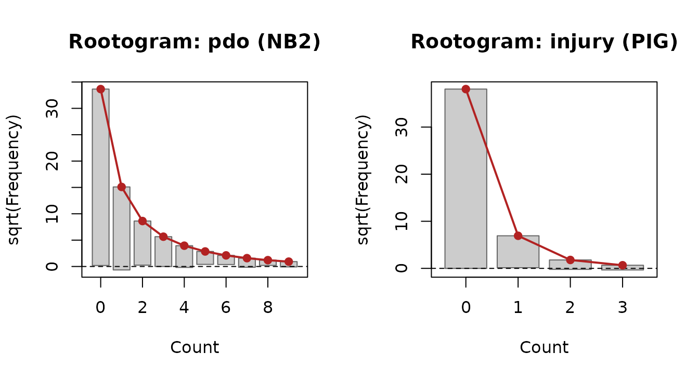

Multivariate count models
Source:vignettes/multivariate-count-models.Rmd
multivariate-count-models.RmdCrash data often hold several counts for each site: crashes of each
severity, or of each type. countreg_mv() fits one count
regression for each outcome in one model. Each outcome has its own
family, mean formula and distribution-parameter formulas.
This is the direct way to model counts by category. A total and its
split across categories is the other way; see
vignette("total-allocation-models").
library(flexCountReg)
data("washington_roads")
w <- washington_roads
w$pdo <- w$Total_crashes - w$Injury_crashes
w$injury <- w$Injury_crashes
colSums(w[, c("pdo", "injury")])
#> pdo injury
#> 638 571. One family for each outcome
Outcomes can behave differently. Property damage only (PDO) crashes are frequent; injury crashes are rarer and can be more skewed. So each outcome can have its own family:
m <- countreg_mv(cbind(pdo, injury) ~ lnaadt + speed50 + offset(lnlength),
data = w, family = c(pdo = "NB2", injury = "PIG"))
summary(m)
#> Multivariate count model
#>
#> Rows: 1501
#> Std. errors: normal
#> Equations: independent given the covariates
#>
#> pdo (NB2):
#> Estimate Std. Error z value Pr(>|z|)
#> (Intercept) -9.42403 0.47838 -19.700 < 2e-16 ***
#> lnaadt 1.17438 0.05483 21.420 < 2e-16 ***
#> speed50 -0.51500 0.11414 -4.512 6.42e-06 ***
#> ln(alpha) -0.86569 0.23122 -3.744 0.000181 ***
#>
#> injury (PIG):
#> Estimate Std. Error z value Pr(>|z|)
#> (Intercept) -7.4115 1.1903 -6.227 4.77e-10 ***
#> lnaadt 0.6661 0.1418 4.698 2.63e-06 ***
#> speed50 -1.2201 0.4146 -2.943 0.00325 **
#> ln(eta) 0.7900 1.9897 0.397 0.69132
#>
#> Log-likelihood: -1247.0544 AIC: 2510.1088 BIC: 2552.6199The coefficients are named <outcome>:<term>.
family takes one code for every outcome, or one per
outcome. Different right-hand sides are given as a list of formulas, one
per outcome:
m2 <- countreg_mv(list(pdo = pdo ~ lnaadt + speed50 + offset(lnlength),
injury = injury ~ lnaadt + offset(lnlength)),
data = w, family = c(pdo = "NB2", injury = "PIG"))
AIC(m, m2)
#> df AIC
#> m 8 2510.109
#> m2 7 2519.182dis_param_formula_1 and dis_param_formula_2
take one formula for every outcome or a list named by outcome, so the
dispersion of one outcome can depend on covariates while the others stay
constant.
2. Choosing the families
The equations are fitted together, but in this version they are
independent given the covariates: the log-likelihood is the sum of the
equations’ log-likelihoods, and each equation’s estimates equal those of
a separate countreg() fit. So the family of each outcome
can be chosen by comparing fits that change only that outcome’s
family:
fams <- list(c("NB2", "NB2"), c("NB2", "PIG"), c("NB2", "PLN"),
c("PIG", "PIG"))
sapply(fams, function(f) {
fit <- countreg_mv(cbind(pdo, injury) ~ lnaadt + speed50 +
offset(lnlength), data = w, family = f)
c(pdo = f[1], injury = f[2], AIC = round(AIC(fit), 1))
})
#> [,1] [,2] [,3] [,4]
#> pdo "NB2" "NB2" "NB2" "PIG"
#> injury "NB2" "PIG" "PLN" "PIG"
#> AIC "2510.2" "2510.1" "2510" "2509.9"Here the choices fit almost equally well (the AICs are within 0.3), so the simpler NB2 is a reasonable choice for both outcomes. With rarer or more skewed outcomes the differences between families are larger.
3. Tests across equations
One fit gives the covariance of all the estimates, so hypotheses that involve several equations can be tested. Is the effect of traffic the same for PDO and injury crashes?
b <- coef(m)
V <- vcov(m)
a <- c("pdo:lnaadt", "injury:lnaadt")
diff <- b[a[1]] - b[a[2]]
se <- sqrt(V[a[1], a[1]] + V[a[2], a[2]] - 2 * V[a[1], a[2]])
c(difference = unname(diff), z = unname(diff / se),
p = 2 * pnorm(-abs(unname(diff / se))))
#> difference z p
#> 0.5083084635 3.3436966915 0.0008267007Traffic increases PDO crashes clearly more than injury crashes (p < 0.001), so the share of injury crashes falls as traffic grows. The covariance between the two estimates is zero here, because the equations are independent; with correlated equations it would not be.
4. Predictions
predict() gives a matrix of expected counts, one column
per outcome. type = "prob" gives, for each outcome, the
probabilities of the counts 0, 1, 2, …, and simulate()
draws all outcomes at once:
nd <- w[c(1, 50, 200), ]
predict(m, newdata = nd)
#> pdo injury
#> [1,] 0.77454644 0.03005740
#> [2,] 0.09928381 0.01309018
#> [3,] 0.78249900 0.04238618
lapply(predict(m, newdata = nd, type = "prob", max_count = 3), round, 3)
#> $pdo
#> 0 1 2 3
#> [1,] 0.511 0.299 0.124 0.044
#> [2,] 0.907 0.086 0.006 0.000
#> [3,] 0.508 0.299 0.125 0.045
#>
#> $injury
#> 0 1 2 3
#> [1,] 0.971 0.028 0.001 0
#> [2,] 0.987 0.013 0.000 0
#> [3,] 0.960 0.038 0.002 0tidy() has an outcome column, and
residuals(), fitted(), confint()
and glance() work as for other models.
rootogram() compares the observed counts of each outcome
with its own fitted distribution, one plot per outcome
(outcome selects some of them). It checks the marginal
distributions, not the dependence between the outcomes:
rootogram(m)
5. Correlated outcomes
The counts of different severity levels at a site are usually
correlated: unobserved conditions that raise PDO crashes also raise
injury crashes. rpar_formula adds random parameters to the
equations, drawn once per unit of group_var (here a road
segment, shared by its three years) and correlated across equations
(correlation = "across", the default).
Poisson outcomes with correlated normal random intercepts give the multivariate Poisson-lognormal model (MVPLN): each segment’s intercepts in the two equations are bivariate normal, which makes each outcome overdispersed and the two outcomes correlated.
mr <- countreg_mv(cbind(pdo, injury) ~ lnaadt + speed50 + offset(lnlength),
data = w, family = "POISSON", rpar_formula = ~ 1,
group_var = "ID", rpar_draws = 200, seed = 1)
summary(mr)
#> Multivariate count model
#>
#> Rows: 1501
#> Std. errors: normal
#> Units: 507
#> Random parameters: across correlation, 200 draws per unit of ID
#>
#> pdo (POISSON):
#> Estimate Std. Error z value Pr(>|z|)
#> (Intercept) -9.50853 0.53848 -17.658 < 2e-16 ***
#> lnaadt 1.16334 0.06264 18.571 < 2e-16 ***
#> speed50 -0.52536 0.13702 -3.834 0.000126 ***
#>
#> injury (POISSON):
#> Estimate Std. Error z value Pr(>|z|)
#> (Intercept) -7.5771 1.1758 -6.444 1.16e-10 ***
#> lnaadt 0.6656 0.1375 4.841 1.29e-06 ***
#> speed50 -1.2357 0.4134 -2.989 0.0028 **
#>
#> Random parameters (Cholesky factor):
#> Estimate Std. Error z value Pr(>|z|)
#> sd:pdo:(Intercept) 0.65585 0.06746 9.721 <2e-16
#> chol:injury:(Intercept)|pdo:(Intercept) 0.40306 0.21548 1.871 0.0614
#> sd:injury:(Intercept) 0.48529 0.33677 1.441 0.1496
#>
#> sd:pdo:(Intercept) ***
#> chol:injury:(Intercept)|pdo:(Intercept) .
#> sd:injury:(Intercept)
#>
#> Standard deviations and correlations:
#> SD pdo:(Intercept)
#> pdo:(Intercept) 0.656
#> injury:(Intercept) 0.631 0.639
#>
#> Log-likelihood: -1227.0638 AIC: 2472.1276 BIC: 2519.9526
AIC(m, mr)
#> df AIC
#> m 8 2510.109
#> mr 9 2472.128The estimated correlation of the random intercepts is about 0.64:
segments with more PDO crashes than their traffic and speed limit
predict tend to have more injury crashes too. The evidence for it is
modest (the chol: element that carries it has p of about
0.06), because injury crashes are rare. The MVPLN still fits much better
than the independent NB2 and PIG equations (AIC 2472 against 2510).
Other families can be used in the same way: they keep their own
overdispersion within each outcome, and the random intercepts add the
correlation between outcomes. Random slopes are more terms in
rpar_formula, such as ~ 1 + lnaadt, and
rpar_formula can also be a list with a different formula
for each outcome.
The likelihood is simulated: each segment’s likelihood is averaged
over rpar_draws draws of its random parameters (randomly
shifted Halton points), with analytic gradients. The standard deviations
are reported as positive; the correlations come from the off-diagonal
elements (chol:) of the Cholesky factor.
6. Joint and conditional probabilities
With correlated outcomes, the probability of a combination of counts
is not the product of the outcomes’ probabilities.
type = "joint" gives the probability of given counts of all
outcomes, and type = "conditional" the distribution of one
outcome given counts of the others, such as the chance of injury crashes
on a segment-year with three PDO crashes:
nd <- w[c(1, 50, 200), ]
predict(mr, newdata = nd, type = "joint", y = c(pdo = 1, injury = 1))
#> [1] 0.008986714 0.001443140 0.012633591
round(predict(mr, newdata = nd, type = "prob", max_count = 2)$injury, 4)
#> 0 1 2
#> [1,] 0.9702 0.0291 0.0006
#> [2,] 0.9868 0.0130 0.0001
#> [3,] 0.9577 0.0409 0.0013
round(predict(mr, newdata = nd, type = "conditional", outcome = "injury",
given = c(pdo = 3), max_count = 2), 4)
#> 0 1 2
#> [1,] 0.9566 0.0421 0.0013
#> [2,] 0.9738 0.0257 0.0005
#> [3,] 0.9388 0.0585 0.0025
round(predict(mr, newdata = nd, type = "conditional", outcome = "injury",
given = c(pdo = 0), max_count = 2), 4)
#> 0 1 2
#> [1,] 0.9748 0.0247 4e-04
#> [2,] 0.9872 0.0127 1e-04
#> [3,] 0.9643 0.0348 9e-04Three PDO crashes raise the probability of an injury crash above its marginal value, and no PDO crash lowers it. Without random parameters (or a copula, Section 7) the equations are independent, and the conditional probabilities equal the marginal ones.
For segments in the estimation data,
random = "posterior" uses their own crash history
(Empirical Bayes):
7. Copulas
A copula joins the outcomes’ own distributions into one joint distribution, so each outcome keeps its family and its expected counts:
\[ P(Y_1 \le y_1, Y_2 \le y_2) = C\big(F_1(y_1), F_2(y_2); \theta\big). \]
For counts, the probability of the observed pair is the exact volume of the copula over the rectangle \([F_1(y_1 - 1), F_1(y_1)] \times [F_2(y_2 - 1), F_2(y_2)]\), the sum of four copula values (of \(2^J\) with \(J\) outcomes). For a count far in the upper tail of its distribution both ends of its interval are within rounding of 1, so there the volume is integrated over the upper tail probabilities \(P(Y > y)\) instead, and improbable pairs keep their precision. The copula families differ in the shape of the dependence:
copula |
dependence |
|---|---|
"gaussian" |
symmetric, any sign, no tail dependence (two outcomes) |
"frank" |
symmetric, no tail dependence; any sign for two outcomes |
"clayton" |
positive, strongest for joint low counts |
"gumbel" |
positive, strongest for joint high counts |
mc <- countreg_mv(cbind(pdo, injury) ~ lnaadt + speed50 + offset(lnlength),
data = w, family = c(pdo = "NB2", injury = "PIG"),
copula = "clayton")
summary(mc)
#> Multivariate count model
#>
#> Rows: 1501
#> Std. errors: normal
#> Dependence: Clayton copula
#>
#> pdo (NB2):
#> Estimate Std. Error z value Pr(>|z|)
#> (Intercept) -9.42640 0.47919 -19.672 < 2e-16 ***
#> lnaadt 1.17436 0.05492 21.381 < 2e-16 ***
#> speed50 -0.51196 0.11434 -4.478 7.55e-06 ***
#> ln(alpha) -0.85163 0.23000 -3.703 0.000213 ***
#>
#> injury (PIG):
#> Estimate Std. Error z value Pr(>|z|)
#> (Intercept) -7.4266 1.1820 -6.283 3.32e-10 ***
#> lnaadt 0.6682 0.1408 4.747 2.07e-06 ***
#> speed50 -1.2045 0.4147 -2.905 0.00367 **
#> ln(eta) 0.7627 1.9563 0.390 0.69661
#>
#> Copula:
#> Estimate Std. Error z value Pr(>|z|)
#> copula:ln(theta) -1.3405 0.9096 -1.474 0.141
#>
#> Clayton copula: theta = 0.2617, Kendall's tau = 0.116 (SE 0.093)
#>
#> Log-likelihood: -1246.3437 AIC: 2510.6874 BIC: 2558.5123summary() reports the copula parameter and its Kendall’s
tau. With counts, this tau describes the copula, not the rank
correlation of the counts themselves, which is weaker when the counts
are small.
Here the copulas barely change the fit, while the MVPLN of section 5 fits much better:
fams <- c(pdo = "NB2", injury = "PIG")
f <- cbind(pdo, injury) ~ lnaadt + speed50 + offset(lnlength)
cop <- lapply(c("gaussian", "frank", "clayton", "gumbel"), function(cf)
countreg_mv(f, data = w, family = fams, copula = cf))
round(c(independent = AIC(m), gaussian = AIC(cop[[1]]),
frank = AIC(cop[[2]]), clayton = AIC(cop[[3]]),
gumbel = AIC(cop[[4]]), MVPLN = AIC(mr)))
#> independent gaussian frank clayton gumbel MVPLN
#> 2510 2511 2511 2511 2512 2472The two models describe different dependence. The copula links the two counts of the same segment-year; the random intercepts of the MVPLN are shared by a segment’s three years, so it also captures that some segments have more crashes of both kinds year after year. In these data the dependence is mostly of the second kind. A copula suits outcomes measured once per unit, or dependence within a period; random parameters suit repeated observations of the same units.
The two can also be combined: random intercepts shared by a segment’s years, and a copula for what remains within each year.
mb <- countreg_mv(cbind(pdo, injury) ~ lnaadt + speed50 + offset(lnlength),
data = w, family = "POISSON", rpar_formula = ~ 1,
group_var = "ID", rpar_draws = 200, seed = 1,
copula = "frank")This fit takes about two minutes. Its copula parameter is close to zero (Frank theta 0.06, standard error 0.71), and its AIC (2474.7) is higher than that of the MVPLN alone (2472.1): once the segments’ random intercepts are in the model, nothing is left for the copula. On simulated data with both kinds of dependence, the combined model recovers both.
All parameters of a copula model are estimated together by maximum
likelihood (started from the separate equations and the best copula
parameter for them), with analytic gradients from the derivatives of the
copula and of each outcome’s distribution function.
predict() gives joint and conditional probabilities from
the copula, and simulate() draws the outcomes from it.